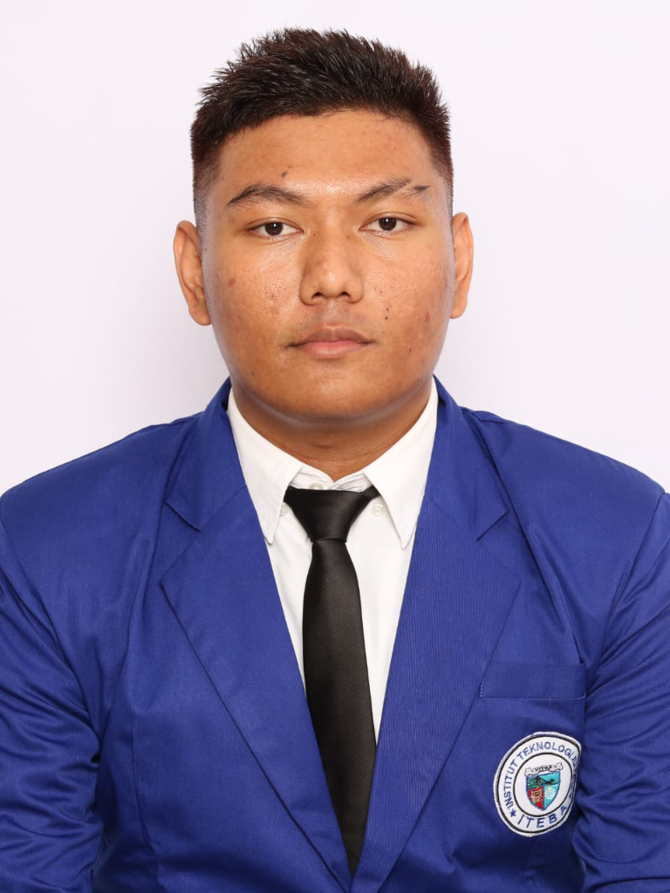

Halo, saya
Noor Fasya Achmad Syawal
Mahasiswa aktif Program Studi Sistem Informasi di Institut Teknologi Batam (ITEBA) dengan pengalaman kerja profesional di bidang pelayanan (hospitality) dan operasional restoran. Siap berkontribusi secara penuh maupun paruh waktu dengan dedikasi tinggi.

Tentang Saya
Sekilas Profil
Saya adalah seorang mahasiswa aktif di jurusan Sistem Informasi di Institut Teknologi Batam (ITEBA) dengan semangat tinggi untuk belajar dan berkembang dalam dunia profesional.
Memiliki pengalaman sebagai waiter di restoran dan keterampilan dasar dalam manajemen waktu, komunikasi yang baik, serta kemampuan bekerja dalam tim. Terbuka untuk berkarir di posisi Sales atau Waiter dengan keinginan kuat untuk memberikan pelayanan terbaik dan mencapai target yang ditetapkan oleh perusahaan.
Nilai & Etos Kerja
Komunikasi & Pelayanan Ramah
Mampu berkomunikasi secara efektif dan sopan dengan pelanggan maupun rekan tim dari berbagai latar belakang.
Manajemen Waktu & Target Ketat
Terbiasa bekerja secara disiplin, tanggap, dan efisien baik dalam lingkungan kerja cepat maupun tuntutan akademis.
Ketelitian Administratif
Memiliki pengalaman langsung dalam menyusun laporan penjualan harian dan membantu pengelolaan stok inventaris.
Kemampuan Bahasa
Bahasa Indonesia (aktif, lancar) dan Bahasa Inggris (pemahaman pasif untuk istilah kerja & digital).
Pengalaman Kerja
Pengalaman kerja riil di industri pelayanan dan operasional restoran.
Waiter (Pelayan Restoran)
Restoran Vila Girikemir
Bertanggung jawab penuh atas kelancaran alur pelayanan tamu dari kedatangan hingga selesai bersantap, menjaga kepuasan pelanggan, serta mendukung administrasi kasir harian.
- Pelayanan Makanan & Minuman: Mengantar pesanan makanan dan minuman dengan cepat, tepat, dan higienis ke meja pelanggan.
- Kenyamanan & Kebersihan Fasilitas: Membantu membersihkan, merapikan meja, dan menata fasilitas restoran untuk memastikan kenyamanan maksimal setiap tamu.
- Laporan Penjualan & Inventaris: Menyusun rekapan laporan penjualan harian serta membantu proses pengecekan dan pengelolaan inventaris bahan baku.
- Service Excellence: Memberikan layanan pelanggan yang ramah, santun, dan profesional guna menciptakan pengalaman bersantap yang berkesan.
Pendidikan
Jejak pendidikan formal yang membangun wawasan akademis dan karakter.
Sistem Informasi (S1)
Institut Teknologi Batam (ITEBA)
Mempelajari pengelolaan sistem informasi bisnis, basis data, dasar logika komputasi, serta integrasi teknologi untuk mendukung operasional organisasi modern.
Ilmu Pengetahuan Sosial (IPS)
SMA Negeri 26 Batam
Menempa pemahaman dalam dinamika sosial, dasar ekonomi, komunikasi kemasyarakatan, serta keaktifan berorganisasi di lingkungan sekolah.
Keahlian & Keterampilan
Kombinasi aplikasi komputer perkantoran dan keahlian personal dalam lingkungan kerja.
Aplikasi Komputer (Microsoft Office)
Penguasaan dasar aplikasi untuk dokumentasi dan data
Kemampuan Interpersonal & Kerja
Keahlian relasional dan mentalitas siap kerja